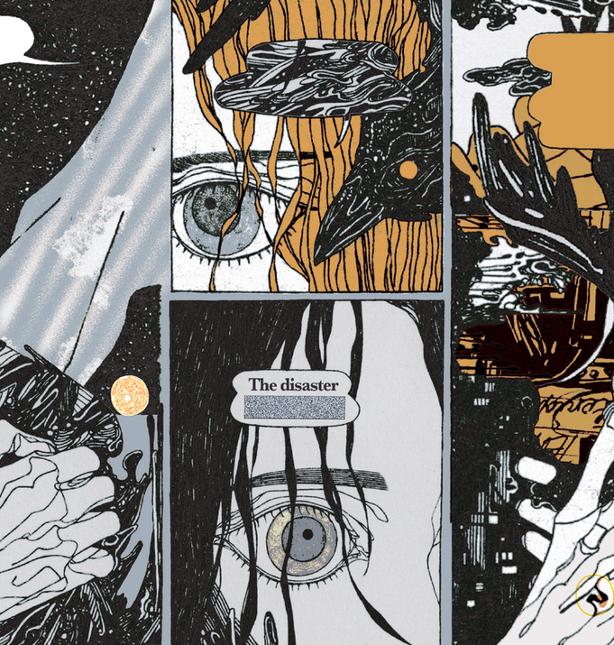

PROMISES
제인은 17살 때 처음 만났다. 거의 유일하게 모습이 변하지 않은 사람이다.
그녀는 처음에도 무서웠고, 이후 창이[CHANGE] 때에도 무서웠고, 지금도 조금
무섭다. 제인이 처음으로 그린 에피소드 [The House] 에서 나타난 것은 아마도 내게
그녀가 가장 필요했기 때문이다. 그녀는 가장 용감하고 진실하다. 그녀는 처음
만난 날 바닷가에서 어떤 물고기 얘기를 하였다. 그러고 보면 나와
디스코캣[DISCO CAT]에게도 그 얘기뿐이었다. 그 바다는 지금 증오와 후회,
사랑으로 가득하다.
-
I met Jane when I was 17. She is almost the only person who has not changed. I was scared of her when I first met her, also during the [CHANGE] session, and I still am a bit. I feel the reason that she appeared in [The House], the first episode I drew, is that I needed her most at the time. She is the most brave and honest person I have met. When I met her at the coast, she told me about some fish. Come to think of it, she told me and the [DISCO CAT] about it too. The ocean now is full of hatred, regret, and love.
-
I met Jane when I was 17. She is almost the only person who has not changed. I was scared of her when I first met her, also during the [CHANGE] session, and I still am a bit. I feel the reason that she appeared in [The House], the first episode I drew, is that I needed her most at the time. She is the most brave and honest person I have met. When I met her at the coast, she told me about some fish. Come to think of it, she told me and the [DISCO CAT] about it too. The ocean now is full of hatred, regret, and love.
약속들
Jane, 071126-071126, The House
Jane, 071126-071126, The House

ⓒ 2026 피플즈 PEOPLES All Rights Reserved.